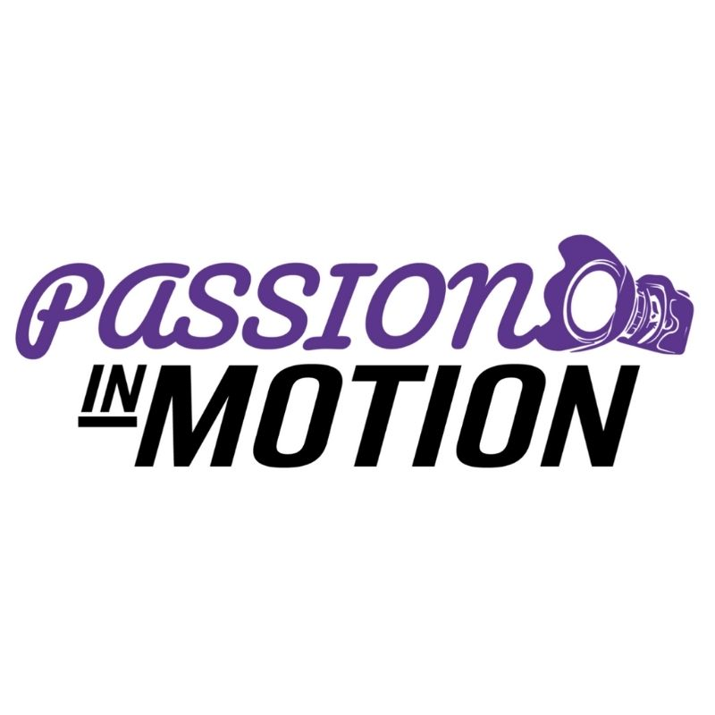

Logo
Dit logo heb ik en mijn projectgenoten gemaakt voor een project. In dit project komen film en passies aan bod waardoor wij dit met elkaar wilden combineren. Ook wilde wij dat mensen nieuwschierig worden van ons logo en dat het visueel fijn is voor het oog.
Het logo hebben wij de kleuren git en paars gegeven omdat dat de twee kleuren zijn van onze klassen. Daarnaast hebben wij een camera in ons logo verwerkt omdat wij gebruik maken van film. Dit logo is met illustrator gemaakt.